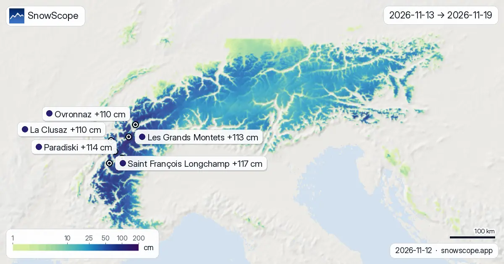
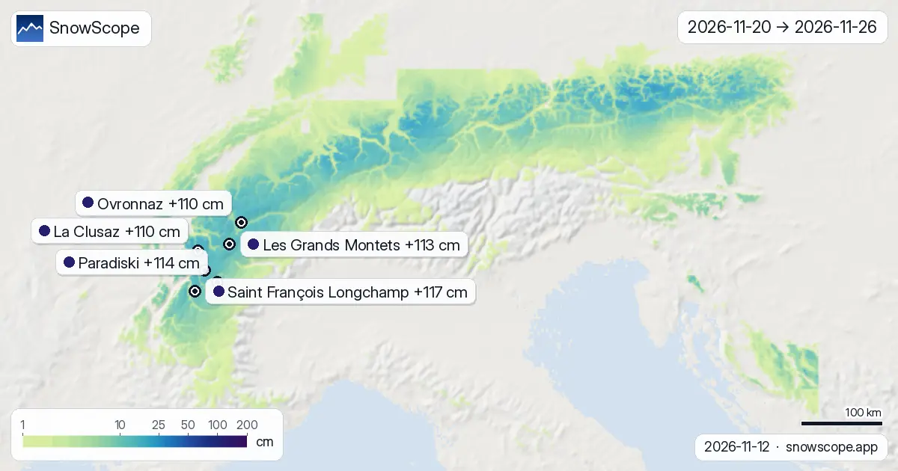

Two-week snow forecast in the Alps: up to 117 cm of new snow by 26 November
Here are the new maps of the next two weeks in the Alps, 13 November to 26 November: the new snow expected on the terrain, read from the two global models that reach two weeks, ECMWF and GFS (middle value, with the range of the two). The most goes to Saint François Longchamp: about 117 cm on its upper slopes, 94 cm–141 cm depending on the model, then Paradiski with 114 cm. Snow in the mountains is water held back for spring: what falls now feeds rivers and reservoirs later.
See the live snow forecast for Saint François Longchamp in the SnowScope appSnow depth, powder alerts and the 3D map, free.
Resort by resort, the next 14 days
At Saint François Longchamp (France) the two weeks add up to about 117 cm (94 cm–141 cm depending on the model): 104 cm by the end of the first week, then 14 cm more. The snowiest day is 18 November with 33 cm; 5 days bring 5 cm or more.
At Paradiski (France) the two weeks add up to about 114 cm (97 cm–132 cm depending on the model): 103 cm by the end of the first week, then 11 cm more. Mark 18 November: that is the biggest day, with 44 cm, out of 5 days at 5 cm or more.
Les Grands Montets (France): about 113 cm in 14 days (86 cm–140 cm between the models), 100 cm in the first week and 13 cm in the second. Mark 18 November: that is the biggest day, with 37 cm, out of 5 days at 5 cm or more.
At La Clusaz (France) the two weeks add up to about 110 cm (87 cm–134 cm depending on the model): 91 cm by the end of the first week, then 20 cm more. The snowiest day is 18 November with 35 cm; 5 days bring 5 cm or more.
Ovronnaz (Switzerland): about 110 cm in 14 days (90 cm–130 cm between the models), 94 cm in the first week and 16 cm in the second. Mark 18 November: that is the biggest day, with 32 cm, out of 5 days at 5 cm or more.
At Arêches Beaufort (France) the two weeks add up to about 108 cm (87 cm–129 cm depending on the model): 92 cm by the end of the first week, then 16 cm more. The snowiest day is 18 November with 37 cm; 5 days bring 5 cm or more.
| Resort | Snow depth | New snow, 72 h | Coming, next days | Top |
|---|---|---|---|---|
| Saint François Longchamp | 24 cm | 18 cm | 8 cm | 2,516 m |
| Paradiski | 58 cm | 28 cm | 5 cm | 3,205 m |
| Les Grands Montets | 50 cm | 42 cm | 5 cm | 2,768 m |
| La Clusaz | 5 cm | 3 cm | 5 cm | 2,476 m |
| Ovronnaz | 77 cm | 30 cm | 4 cm | 2,456 m |
| Arêches Beaufort | 19 cm | 5 cm | 8 cm | 2,319 m |

First week against second week
Over the whole region, 78 % of the fortnight's snow falls in the first week (13 November to 19 November), the rest in the second (20 November to 26 November).
Front-loaded: Saint François Longchamp, Paradiski, Les Grands Montets, La Clusaz, Ovronnaz and Arêches Beaufort get most of their snow in the first week.
On the map, about 68,569 km² of mountain terrain get 20 cm or more over the two weeks, and 18,212 km² get 50 cm or more.

New snow by height
The same two weeks by height, over all the mountains of the region (every square kilometre of terrain, not only the resorts): between 1,000 m and 1,500 m: typically 10 cm, the snowiest quarter of that band 20 cm or more; between 1,500 m and 2,000 m: typically 28 cm, the snowiest quarter of that band 43 cm or more; between 2,000 m and 2,500 m: typically 32 cm, the snowiest quarter of that band 56 cm or more; between 2,500 m and 3,000 m: typically 36 cm, the snowiest quarter of that band 68 cm or more; between 3,000 m and 4,500 m: typically 62 cm, the snowiest quarter of that band 82 cm or more.
The days to watch
Snow days across the region, over the 1166 resorts in our list: Friday 13 November (555 of 1166 resorts at 5 cm or more, up to 27 cm at Krvavec), Tuesday 17 November (372 of 1166 resorts at 5 cm or more, up to 24 cm at Les Grands Montets), Wednesday 18 November (524 of 1166 resorts at 5 cm or more, up to 44 cm at Paradiski) and Thursday 19 November (626 of 1166 resorts at 5 cm or more, up to 32 cm at Glacier 3000).
How to read the maps
Three maps: the whole fortnight, then the first and the second week. Colours start at one centimetre of new snow and darken with the amount; the pins give the value on the upper slopes of the resorts in this post.
Treat the second week as a direction of travel. When the two models agree, the range is narrow; when it is wide, wait for the next maps before you book. New maps come out every morning.
Tips for skiers
- Plan the first week with these maps; keep the second week loose and check again in a few days.
- A forecast 0 °C level can be off by several hundred metres; check the map again the day before you go.
- Before any off-piste or touring day, read the official avalanche bulletin (links below).
- Snow on the map does not mean a resort is open: check lifts and dates on the resort's website.
About these numbers
Resort snow depths are the deepest snow on the resort's upper slopes from the SnowScope snow model (about 1 km, run of 12 November); they are estimates for an area, not a measurement at one point. Station values are measurements on the date shown. Forecasts can change. Always read the official avalanche bulletin before going off-piste.
Official avalanche bulletins: EAWS (Alps)
Cite this report
For research, teaching or the press: the numbers and charts are free to reuse under CC BY 4.0 with this citation.
SnowScope (2026), Two-week snow forecast in the Alps: up to 117 cm of new snow by 26 November, https://snowscope.app/blog/en/2026/11/alps-2-week-snow-forecast-maps-12-november-2026.html, accessed 2026-11-12
SnowScope (Atlas Labs). (2026, November 12). Two-week snow forecast in the Alps: up to 117 cm of new snow by 26 November. SnowScope snow reports. https://snowscope.app/blog/en/2026/11/alps-2-week-snow-forecast-maps-12-november-2026.html
BibTeX
@misc{snowscope2026alps2weeksnowforecastmap,
author = {{SnowScope (Atlas Labs)}},
title = {Two-week snow forecast in the Alps: up to 117 cm of new snow by 26 November},
year = {2026},
month = nov,
howpublished = {\url{https://snowscope.app/blog/en/2026/11/alps-2-week-snow-forecast-maps-12-november-2026.html}},
note = {Published 2026-11-12 18:20 UTC; accessed 2026-11-12}
}· CC BY 4.0 · Methods, data and tools →
Saint François Longchamp: snow and temperature by height, this winter vs last (tools) →
Follow Saint François Longchamp
Free: a message when fresh snow is coming, and the forecast every morning.
More snow reports

La Rosière snow conditions on our 11 November model run: 24 cm at the top (2799 m), bare mid-mountain and village, and a seven-day forecast of 108 cm at the top and 61 cm at mid-mountain. The sunny side of the Petit-Saint-Bernard in numbers.

The Isola 2000 ski map with today's snow: 9 cm at the top, 7 cm at mid-mountain, 2 cm at the base after 31 cm in a week, how the Pelevos, Saint-Sauveur and Lombarde sectors are laid out, and what a usual winter brings.

Snow at Alpe Devero (Ossola, Piedmont) on our model: 2 cm at the top (2201 m), bare below, 36 cm of new snow forecast at the top in the next seven days. The small car-free resort and its usual winter in numbers.